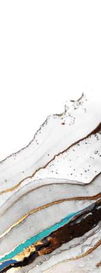

At the moment, there are no entries available for display

SOCIAL AND ENVIRONMENTAL IMPACT
Social Review


Investing in Our People
We believe our people are our greatest investment. We are committed to providing our employees with an exceptional workplace, supported by a robust policy framework that outlines programs and initiatives to empower them and cultivate a conducive work environment. This commitment aligns with our sustainability goals and drives a high-performance culture that reflects our values. More information on our performance-driven culture can be found on page 26.
[[Image]]

UNBOD
Through Unbod, we encourage our employees to prioritize their well-being, embracing a holistic approach to health. We promote physical, mental, and spiritual wellness with an engaging yearly calendar of activities and initiatives in the workplace.
To foster a culture of health and wellness a variety of initiatives was organized in 2024. We hosted a padel tournament at the SEDCO Arena, attracting 24 participants who competed over four days in front of an enthusiastic audience. The tournament provided a fun and engaging opportunity for employees to stay active through sport.
Our annual “Ramadan Health Challenge” encouraged employees to prioritize their well-being through increased step counts, weight loss, and regular exercise. To further inspire an active lifestyle, we organized the ‘Steps Challenge Competition’, which included a group walk at the Red Sea Mall. With nearly 50 participants, the month-long event saw an impressive total of 11,204,509 steps taken.
Impact In Numbers
3
Initiatives
+5
Activities under each program
+86
Overall satisfaction rate
+150
Number of registered employees
+103
Employees engaged in activities related directly to their wellbeing
Empowering Communities
Our dedication to community development and empowerment extends to programs like Badir – which encourages employee volunteerism; award-winning initiatives – Rowad; and licensed foundations – the Salem Bin Mahfouz Foundation (SBMF), established in honor of SEDCO’s founder, and Riyali. These programs reflect our core values and leverage our expertise to create innovative solutions.
- 8 Journey of Giving initiatives
- 2 International Volunteer Day initiatives
- 2 Student visits
- 9 Specialized consultations to startups
[[Image]]
BADIR
Badir, SEDCO’s volunteering program provides our employees with opportunities to make a meaningful impact beyond their designated roles, fostering a strong sense of community within SEDCO and connecting us with the needs of our communities. Volunteering is integrated into employee KPIs with structured initiatives organized during work hours to encourage greater participation. We also recognize external volunteering hours completed outside of SEDCO.
Through Badir, we provide support services including general assistance, consultations, and coaching to students, entrepreneurs, and small businesses, aiming to create lasting positive change in our communities. We developed an internal platform in 2024 to streamline management of volunteer programs, with a fixed number of ambassadors from each function or operating company in our building. SEDCO Holding also participated in the First Corporate Social Responsibility (CSR) Forum in Riyadh, where we proudly showcased our commitment to sustainable development and community engagement.
“The Donation Corner” initiative continued to thrive, collecting essential items for over 1,000 beneficiaries throughout the year. In addition, 45 compassionate employees donated blood, demonstrating a spirit of giving back to the community.
During the year, we welcomed 45 university students to learn about SEDCO’s business functions to help students make informed career decisions. We also connected entrepreneurs from nine startups with specialist staff who provided tailored consultations that directly addressed their business challenges.
Impact In Numbers
+37
Volunteering days
523
Beneficiaries
96%
Overall satisfaction rate
+5,253
Volunteer hours
26
Consultants
+1500
Donations
Journey of Giving
SEDCO’s annual campaign unites employees in a spirit of generosity during Ramadan, supporting local charities and strengthening community bonds. In 2024, this impactful initiative, held in partnership with Red Sea mall, reached over 3,550 beneficiaries through the distribution of food baskets, clothing, toys, and other essential items.
| 2024 | 2023 | 2022 | |
| Volunteer hours | 2931 | 2,908 | 2,190 |
| Estimated economic value generated (SAR) | 441,346 | 571,812 | 374,056 |
| Beneficiaries | +5,253 | 4,170 | 1,697 |
| Donations | +1,500 | 1,800 | 845 |
*project impact presented with approximate values.
[[Image]]

SALEM BIN MAHFOUZ FOUNDATION (SBMF)
2024 Winner of the National Award for Volunteer Work
Guided by the vision of SEDCO’s founder, SBMF empowers civil society, addresses societal needs, and contributes to the Kingdom’s development. We partner with like-minded organizations, provide institutional grants, and implement impactful programs in three key areas: education, civil society strengthening, and community development.
The Spirit of Giving at SEDCO
On December 5th, over 70 dedicated volunteers celebrated International Volunteer Day with two impactful community initiatives. ‘Let’s Build Bridges of Hope’ provided a joyful and educational day for orphaned children, featuring engaging workshops in a supportive environment. ‘Let’s Nurture a Greener Future’ combined artistic expression with environmental awareness, reminding participants of the importance of recycling through creative activities.

Education
Providing scholarships at undergraduate and graduate levels. Equipping educators and students with essential skills. Promoting cooperative learning models to improve education standards. Fostering student engagement: volunteerism, arts, sports, and cultural activities.

Civil Society
Building capacity of non-profit organizations. Delivering financial assistance to impactful programs. Driving skill development: media, art, and leadership. Fostering religious and community harmony.

Community
Supporting family and youth development programs. Promoting initiatives for economic empowerment Encouraging community engagement and development through volunteerism.
SBMF Impact in 2024
| Education | Civil Society | Community |
|
Provided long-term operational support to three intermediary entities to develop the Kingdom’s non-profit sector. |
Maintained and operated Aisha and Bab Sharif mosques. |
|
Supported activities of 35 charitable associations. | Distributed 5,670 food baskets to families. |
|
Provided 12 associations with financial tools to promote economic sustainability. |
Conducted 12 volunteer programs, engaging 7,632 volunteers. |
|
Sponsored 15 national-level initiatives and events focused on empowerment and education. |
|
|
Trained 48 individuals for employment and 58 for new business ventures. |
||
| Incubated 48 entrepreneurial projects. |

ROWAD
Rowad empowers Saudi entrepreneurs, startups, and SMEs by providing them with the knowledge and tools they need to succeed. Our modern e-learning platform offers expert-curated content on finance, funding, and Shariah-compliant practices, now available in Arabic and English.
In 2023, we launched Rowad Nomou, a specialized program for tech startups seeking funding, providing access to training and facilitating financing opportunities. By addressing knowledge gaps and financing challenges, Rowad contributes to a thriving entrepreneurial landscape in the Kingdom.
Aligned with Vision 2030’s goal of increasing SME contributions to GDP from 20% to 35%, Rowad supports the private sector and has been recognized for its excellence with the ‘Best Learning Technologies Project’ award.
In 2024, Rowad launched the ‘Ghaltat Podcast’, offering valuable insights, strategies, and real-life stories to support entrepreneurs. The podcast achieved significant reach, surpassing 100,000 viewers and listeners. Rowad continued to prioritize workshops and event participation as key pillars of support, engaging over 200 attendees across five cities. Furthermore, Rowad successfully collaborated with Biban 2024 and partnered with Badir to provide specialized consultations to aspiring startups.
Impact In Numbers
507
Rowad Course Enrollments
13
Workshops
6
Activation Areas
6
Podcast Episodes
13
Web Visits
2
Partnerships
57.2%
Engagement Rate
[[Image]]
RIYALI
Riyali is a social initiative that leverages SEDCO’s extensive financial expertise, and aligns with national and global goals, to advance financial literacy across Saudi Arabia.
The program was launched to address concerning financial habits among Saudi youth: 80% spending on wants over needs, 44% not saving, and only 11% demonstrating conscious spending habits.
Impact In Numbers
Encourage students’ initiative and ambition.
Increase students’ financial awareness
Develop students’ personal budgeting and financial planning skills.
Promote use of secure modern financial technologies.
Foster student engagement through competitive activities.
Utilize students’ time effectively through financial literacy programs.
[[Image]]
The program’s educational process combines instruction and explanation for knowledge and skill-based learning. Knowledge is built in the first phases, and practical skills are enhanced through competition in the final phase.
In 2023, Riyali evolved into the Riyali Foundation to expand its reach, supported by the Ministry of Education’s nationwide integration and other partnerships. By 2024, we reached over 3 million beneficiaries, contributing to Saudi Vision 2030’s goal of building a financially responsible society.
Riyali’s Impact in 2024
- 416,659 student participants
- 11,844 student ambassadors
- 15,000 student projects submitted for the Riyali competition
- 87% participant satisfaction rate